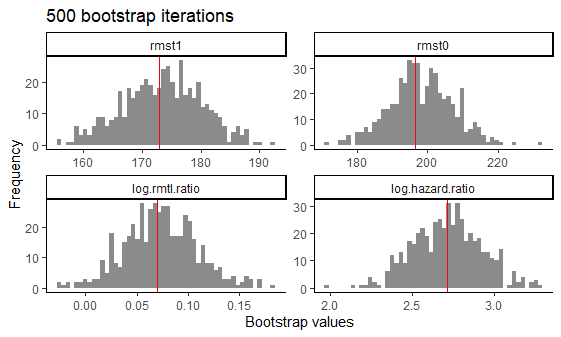
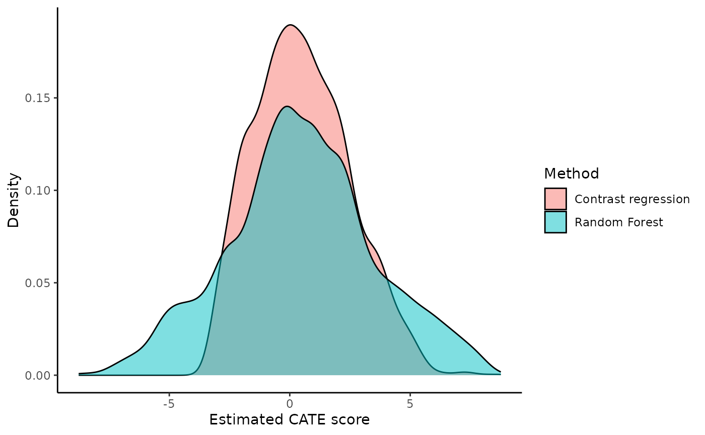
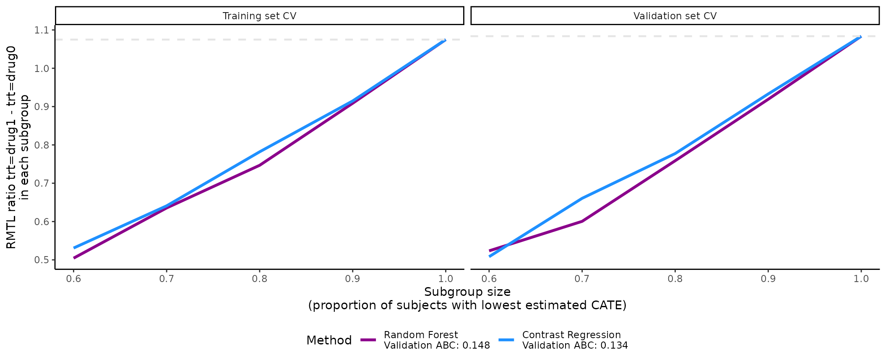
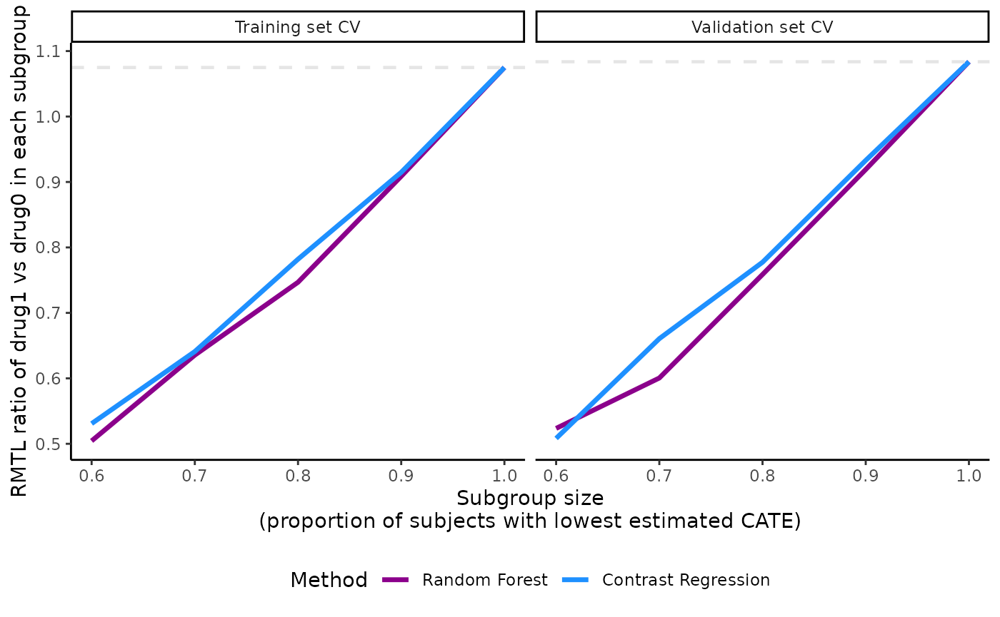
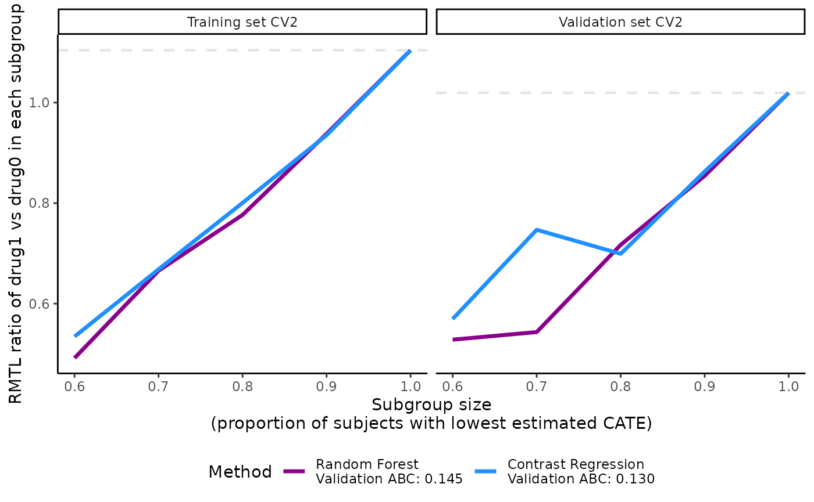
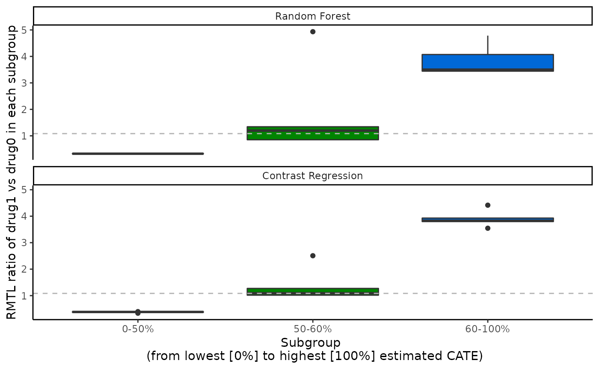

Examples for survival outcome
Vignette 3 of 5
November 25, 2022
Source:vignettes/Survival-examples.Rmd
Survival-examples.Rmd
precmed: Precision Medicine in R
A doubly robust precision medicine approach to estimate and validate conditional average treatment effects
Examples with survival outcome of the entire workflow
Load data set (Example data with survival outcome)
To show the functionalities of the precmed package for
survival outcomes we first need data. For our examples we use simulated
data that is located in the survivalExample data set. The
data set survivalExample was simulated based on real-world
claims data in multiple sclerosis and has 4,000 observations and 9
variables.
We will use
yas the survival outcome, which is the number of days until the first relapse or censoring, whichever comes first.We will use
das the event indicator, where \(1\) represents an event and \(0\) represents censoring. The censoring rate is about 84%.We will use
trtas the treatment variable, which has 2 drugs (drug0 and drug1).The rest of the variables are baseline patient characteristics. Variable
ageis centered at 48 years old. The medical costs in the year prior to treatment initiationprevious_costis centered at 14,362 USD and scaled with standard deviation 24,266 USD.
| drug0 | drug1 | p | test | |
|---|---|---|---|---|
| n | 1849 | 2151 | ||
| age (mean (SD)) | -8.51 (6.40) | 7.31 (5.49) | <0.001 | |
| female = 1 (%) | 1393 (75.3) | 1611 (74.9) | 0.775 | |
| previous_treatment (%) | 0.794 | |||
| drugA | 819 (44.3) | 933 (43.4) | ||
| drugB | 207 (11.2) | 252 (11.7) | ||
| drugC | 823 (44.5) | 966 (44.9) | ||
| previous_cost (mean (SD)) | -0.12 (0.59) | 0.11 (1.24) | <0.001 | |
| previous_number_symptoms (%) | 0.003 | |||
| 0 | 191 (10.3) | 156 ( 7.3) | ||
| 1 | 1219 (65.9) | 1467 (68.2) | ||
| >=2 | 439 (23.7) | 528 (24.5) | ||
| previous_number_relapses (%) | 0.110 | |||
| 0 | 1247 (67.4) | 1365 (63.5) | ||
| 1 | 488 (26.4) | 618 (28.7) | ||
| 2 | 99 ( 5.4) | 147 ( 6.8) | ||
| 3 | 14 ( 0.8) | 19 ( 0.9) | ||
| 4 | 1 ( 0.1) | 1 ( 0.0) | ||
| 5 | 0 ( 0.0) | 1 ( 0.0) |
Estimation of the ATE with atefit()
First, one might be interested in the effect of the drug (trt) on the number of days until the first relapse or censoring (y). Lets test this using Cox regression.
library(survival)
output_cox <- coxph(Surv(y, d) ~ trt, data = survivalExample)
summary(output_cox)
#> Call:
#> coxph(formula = Surv(y, d) ~ trt, data = survivalExample)
#>
#> n= 4000, number of events= 648
#>
#> coef exp(coef) se(coef) z Pr(>|z|)
#> trtdrug1 1.11311 3.04381 0.09233 12.06 <2e-16 ***
#> ---
#> Signif. codes: 0 '***' 0.001 '**' 0.01 '*' 0.05 '.' 0.1 ' ' 1
#>
#> exp(coef) exp(-coef) lower .95 upper .95
#> trtdrug1 3.044 0.3285 2.54 3.648
#>
#> Concordance= 0.639 (se = 0.009 )
#> Likelihood ratio test= 170.1 on 1 df, p=<2e-16
#> Wald test = 145.3 on 1 df, p=<2e-16
#> Score (logrank) test = 160.9 on 1 df, p=<2e-16We see from the Cox regression we see that drug1 resulted in a hazard ratio (HR) of 3.04 when compared to drug 0. This indicates that drug 0 is superior to drug 1 because drug 1 increases the risk of a relapse.
Now we want to estimate the Average Treatment Effect (ATE) and
correct for several covariates like age and previous treatment because
they might influence the relation between treatment and outcome. The
atefit() function allows estimating the ATE in terms of
restricted mean time lost (RMTL) and HR (hazard ratio). The RMTL
estimator is doubly robust, meaning that the estimator is consistent if
the PS model (argument ps.model) or the outcome model
(argument cate.model) or both are correctly specified. The
estimator also depends on the estimation of Inverse Probability
Censoring Weights (IPCW). The HR estimator is based on a Cox regression
model. The function also provides standard error, confidence intervals,
and p-values based on bootstrap.
The mandatory arguments for atefit() are:
The
responseargument specifies the type of outcome in the data. For survival outcomes,response= “survival”. This informs the function of the necessary arguments and methods to use.The argument
dataindicates the data frame in which the outcome, treatment and covariates specified in eithercate.modelorps.modelshould be fetched.-
The
score.methodargument specifies the precision medicine (PM) methods to be used to calculate the CATE scores. There are a total of 5 scoring methods implemented:poissonfits a Poisson model separately by treatment group.boostinguses gradient boosted regression models (GBM) separately by treatment group.randomForestfits a random forest model by treatment group.twoRegimplements the doubly robust two regressions estimator in @yadlowsky2020estimation.contrastRegimplements the doubly robust contrast regression estimator from @yadlowsky2020estimation.
The argument
cate.modelspecifies the CATE model as a formula, with the survival object from thesurvivalpackage,Surv(y, d), supplied on the left-hand side and the explanatory covariates supplied on the right-hand side. In the example below, we chose to specify to CATE as a linear combination of the following covariates: age, sex, medical costs in the year prior to treatment initiation, and number of relapses in the year prior to treatment initiation. Non-linear or interaction terms could also be included. Note that the treatment variable is not supplied incate.modelsince this is an outcome model.The
ps.modelargument specifies the PS model as a formula, with the treatment variabletrton the left-hand side and the covariates (age and previous treatment in this example) on the right-hand side. The variabletrtmust be supplied as a numeric variable taking only 2 values, “1” for active treatment and “0” for control or comparator. If it is not the case,catecv()will stop with error iftrttakes more than 2 distinct values or will automatically transformtrtinto a numeric variable. In this example,trt(a factor variable taking values “drug0” and “drug1”) was transformed and a warning message was left to the user (see output below):Variable trt was recoded to 0/1 with drug0->0 and drug1->1. If the data are from a RCT, it suffices to specifyps.model= trt ~ 1. Note that the PS model is only used in the estimation of the 2 doubly robust methods (two and contrast regressions).tau0: The truncation time for defining restricted mean time lost. Because our outcomeyis skewed towards 0, we use the 95% upper limit.
Let’s calculate the ATE for the effect of treatment on y and build an
outcome model that contains all variables and a PS model with
age and previous_treatment.
#define tau0
tau0 <- with(survivalExample,
min(quantile(y[trt == "drug1"], 0.95), quantile(y[trt == "drug0"], 0.95)))
#run atefit
output_atefit <- atefit(response = "survival",
data = survivalExample,
cate.model = survival::Surv(y, d) ~ age + female + previous_cost + previous_number_relapses,
ps.model = trt ~ age + previous_treatment,
tau0 = tau0)
#> Warning in data.preproc.surv(fun = "drinf", cate.model = cate.model, ps.model = ps.model, : Variable trt was recoded to 0/1 with drug0->0 and drug1->1.When verbose = 1, the function outputs a progress bar in
the console.
output_atefit
#> Average treatment effect:
#>
#> estimate SE CI.lower CI.upper pvalue
#> log.rmtl.ratio 0.0701553 0.0322753 0.006896883 0.1334137 0.02973119
#> log.hazard.ratio 2.7133243 0.2031470 2.315163522 3.1114851 0.00000000
#>
#> Estimated RMST:
#>
#> estimate SE CI.lower CI.upper pvalue
#> rmst1 172.8609 6.439469 160.2398 185.4820 0
#> rmst0 196.5603 8.372327 180.1508 212.9697 0
#> Warning in print.atefit(x): Variable trt was recoded to 0/1 with drug0->0 and drug1->1.The output of atefit() shows the point estimate,
standard error (“SE”), lower (“CI.lower”) and upper (“CI.upper”) bound
of the 95% confidence interval, and the p-value (“pvalue”) for 4
estimands:
the restricted mean survival time under drug 1 (
$rmst1)the restricted mean survival time under drug 0 (
$rmst0)the log RMTL ratio (
$log.rmtl.ratio), which is the log of the ratio oftau0-$rmst1divided bytau0-$rmst0the log HR (
$log.hazard.ratio).
For example, the log RMTL ratio of 0.07 and the 95% confidence interval of (0.01, 0.13) are displayed in the output. The RMTL ratio of along with the 95% confidence interval suggest that drug 0 is superior to drug 1 because the ratio is significantly greater than 1. When we check the estimated RMST, we also see that the estimated rmst1 is lower compared to rmst0, indicating that patients that received drug0 have a longer mean survival time compared to drug1.
The output of atefit() is expressed in terms of
treatment 0 vs 1, where the RMTL and hazard ratios are expressed as the
ratio of the treatment coded as 1 over the treatment coded as 0. If the
treatment variable is not coded as 0/1 in the data set, the function
returns a warning output_atefit$warning which indicates
what key was used to recode the treatment variable into a 0/1
variable.
output_atefit$warning
#> [1] "Variable trt was recoded to 0/1 with drug0->0 and drug1->1.\n"Using plot(output_atefit), a histograms is generated of
the point estimates across the n.boot bootstrap iterations
for 4 estimands (rmst1, rmst0,
log.rmtl.ratio, log.hazard.ratio). A red
vertical line is added to each histogram with the mean of the bootstrap
estimates.

Histograms of bootstrap estimators for 4 estimands after 500 bootstrap
Estimation of the CATE score with catefit()
Now we have calculated the ATE we know the effect of both treatments
on average, but this effect might not be the same for all patients.
Thus, it might be worthwhile to check if there are subgroups that
respond differently to the treatments. We can calculate the Conditional
Average Treatment Effect (CATE) score which calculates the ATE for
different subgroups in the data. If no internal validation is needed (we
get back to that later), we can use the catefit() function
to a model directly to the entire data set to estimate the CATE score.
For the catefit() function we have to define the
score.method. This arguments specifies the precision
medicine (PM) method to be used to calculate the CATE scores. There are
a total of 5 scoring methods implemented:
The mandatory arguments in catefit() are:
response: “survival” in this example because we use have data with a survival outcome (e.g., number of days until the first relapse or censoring))data: the name of the data set. (survivalExample)-
score.method: argument specifies the precision medicine (PM) methods to be used to calculate the CATE scores. There are a total of 5 scoring methods implemented:poissonfits a Poisson model separately by treatment group.boostinguses gradient boosted regression models (GBM) separately by treatment group.randomForestfits a random forest model by treatment group.twoRegimplements the doubly robust two regressions estimator in @yadlowsky2020estimation.contrastRegimplements the doubly robust contrast regression estimator from @yadlowsky2020estimation.
cate.model: A formula describing the outcome model to be fitted. The outcome must appear on the left-hand side. In the example, we choose to specify to outcome model as a linear combination of the following covariates: age, sex, medical costs in the year prior to treatment initiation, and number of relapses in the year prior to treatment initiation. Non-linear or interaction terms could also be included. Note that the treatment variable is not supplied incate.modelsince this is an outcome model.ps.model: A formula describing the propensity score (PS) model to be fitted. The treatment must appear on the left-hand side and the covariates (age and previous treatment in this example) on the right-hand side. The variabletrtmust be supplied as a numeric variable taking only 2 values, 1 for active treatment and 0 for control or comparator. If it is not the case, the function will stop with error iftrttakes more than 2 distinct values or will automatically transformtrtinto a numeric variable. In this example,trt(a factor variable taking values “drug0” and “drug1”) was transformed and a warning message was left to the user (see output below):Variable trt was recoded to 0/1 with drug0->0 and drug1->1. If the data are from a RCT, it suffices to specifyps.model= trt ~ 1. Note that the PS model is only used in the estimation of the 2 doubly robust methods (two and contrast regressions).
We also specified the following non-mandatory arguments to fit with
the data and problem at hand: initial.predictor.method,
tau0, higher.y, seed, and
plot.gbmperf.
initial.predictor.methodspecifies how predictions of the outcome are estimated in two regressions and contrast regression. Flexible models can be used such as GBM (“boosting”), random forests (“randomForest”) or logistic regression (“logistic”). We chose “logistic” because it is relatively faster than boosting methods and random forest.tau0is the truncation time for defining restricted mean time lost (RMTL). Because our outcomeyis skewed towards 0, we use the 95% upper limit.higher.ywas set toTRUEbecause relapse is a negative event and longer time to first relapse is more desirable in our example. Hence, we are telling the function that subgroups of high responders to drug1 vs drug0 should have later onset of the first relapse. In other situation, higher outcomes may be more favorable for time to a positive event, e.g., time to discharge or time to improved disability. It is important for this argument to match with the nature ofyoutcome because it will affect how the subgroups are defined by the CATE scores and the performance metrics.We set a random seed
seed= 999 to reproduce the results.We avoided generating the boosting performance plots by specifying
plot.gbmperf= FALSE.
Please see the Function description section for details.
If you run into errors or warnings with your data, it might be
helpful to go over the descriptions to see if you need to alter the
default values. In this toy example, we keep the default values of the
remaining arguments. For this toy example we selected
randomForest and contrastReg to limit run
time.
tau0 <- with(survivalExample,
min(quantile(y[trt == "drug1"], 0.95), quantile(y[trt == "drug0"], 0.95)))
output_catefit <- catefit(response = "survival",
data = survivalExample,
score.method = c( "randomForest", "contrastReg"),
cate.model = survival::Surv(y, d) ~ age + female + previous_cost + previous_number_relapses,
ps.model = trt ~ age + previous_treatment,
initial.predictor.method = "logistic",
tau0 = tau0,
higher.y = TRUE,
seed = 999,
plot.gbmperf = FALSE)
#> Warning in data.preproc.surv(fun = "catefit", cate.model = cate.model, ps.model = ps.model, : Variable trt was recoded to 0/1 with drug0->0 and drug1->1.Each method specified in score.method has the following
sets of results in catefit():
-
scorecontains the log-transformed estimated CATE scores for each subject. The CATE score is a linear combination of the variables specified in thecate.modelargument. Same as the outcome, lower CATE scores are more desirable ifhigher.y= FALSE and vice versa. In our example, the survival outcome is time to first relapse, which is a negative event, so higher values indicate later onset of the first relapse. Hence, we specifyhigher.y= TRUE in the example. Each subject has 1 CATE score so the length of this output is 4,000 for our toy example. Below we show the CATE scores estimated with contrast regression for the first 6 subjects in the data.
length(output_catefit$score.contrastReg)
#> [1] 4000
head(output_catefit$score.contrastReg)
#> [1] 5.3273340 1.1661594 3.4869179 4.0157912 -0.8475816 2.4217492-
coefficientscontains the estimated coefficients of the CATE score for each scoring method. It is a data frame of the covariates (including intercept) as rows and scoring methods as columns. In our toy example, there are 4 covariates in thecate.model, plus the intercept, so there are 5 rows of estimated coefficients within each column. Boosting method does not estimate coefficients (it directly predicts the score) so they do not have coefficient results here.
output_catefit$coefficients
#> contrastReg
#> (Intercept) 0.2526763
#> age -0.1912056
#> female 0.1359512
#> previous_cost 0.5629853
#> previous_number_relapses 0.3703522We can define the estimated CATE scores for contrast regression like shown below. The user can use this information to study the influence of each covariate. \[ \begin{aligned} \widehat{CATE} = 0.25 & - 0.19 \times \text{age} \\ & + 0.14 \times \text{female (vs male)} \\ & + 0.56 \times \text{previous medical costs} \\ & + 0.37 \times \text{previous number of relapses} \end{aligned} \]
-
atecontains estimated ATEs by each nested subgroup of high responders to drug 1 defined byprop.cutoff. The subgroups are defined based on the estimated CATE scores with the specified scoring method. In this example, we show the estimated ATEs of subgroups identified by CATE scores of the contrast regression. For example, the estimated ATE for the subgroup of subjects constructed based on the 50% (“prop0.5”) lowest CATE scores estimated from the contrast regression is 0.41.
output_catefit$ate.contrastReg
#> prop0.5 prop0.6 prop0.7 prop0.8 prop0.9 prop1
#> 0.4105682 0.5114925 0.6269751 0.7800895 0.9145661 1.0726748You are encouraged to summarize and visualize the outputs in
whichever way that fits their particular situation outside the package’s
functions. For example, it is possible to plot the densities of all CATE
scores with ggplot. There are some subjects with extremely
high estimated CATE scores but most of the samples fall between -10 and
10.
dataplot <- data.frame(score = factor(rep(c("Random Forest", "Contrast regression"),
each = length(output_catefit$score.randomForest))),
value = c(output_catefit$score.randomForest,output_catefit$score.contrastReg))
dataplot %>%
ggplot(aes(x = value, fill = score)) +
geom_density(alpha = 0.5) +
theme_classic() +
labs(x = "Estimated CATE score", y = "Density", fill = "Method")
#> Warning: Removed 5 rows containing non-finite values (`stat_density()`).
Internal validation via catecv()
The catecv() function provides the same estimation as
the catefit() but via cross-validation (CV). With the
catecv() function internal CV is applied to reduce optimism
in choosing the CATE estimation method that captures the most treatment
effect heterogeneity. The CV is applied by repeating the following steps
cv.n times:
Split the data into a training and validation set according to
train.propargument. The training and validation sets must be balanced with respect to covariate distributions and doubly robust rate ratio estimates (seeerror.maxargument).Estimate the CATE score in the training set with the specified scoring method.
Predict the CATE score in the validation set using the scoring model fitted from the training set.
-
Build nested subgroups of treatment responders in the training and validation sets, separately, and estimate the ATE within each nested subgroup. For each element i of
prop.cutoffargument (e.g.,prop.cutoff[i] = 0.6), take the following steps:Identify high responders as observations with the 60% (i.e.,
prop.cutoff[i]x100%) highest (ifhigher.y = TRUE) or lowest (ifhigher.y = FALSE) estimated CATE scores.Estimate the ATE in the subgroup of high responders using a doubly robust estimator.
Conversely, identify low responders as observations with the 40% (i.e.,
1 - prop.cutoff[i]x100%) lowest (ifhigher.y = TRUE) or highest (ifhigher.y = FALSE) estimated CATE scores.Estimate the ATE in the subgroup of low responders using a doubly robust estimator.
If
abc = TRUE, calculate the area between the ATE and the series of ATEs in nested subgroups of high responders in the validation set. (for more information about the abc score, see Validation curves and the ABC statistics)Build mutually exclusive subgroups of treatment responders in the training and validation sets, separately, and estimate the ATE within each subgroup. Mutually exclusive subgroups are built by splitting the estimated CATE scores according to prop.multi.
Oke, so now we can use the catecv() function to run
internal validation to compare the different scoring methods. The
mandatory arguments are similar to atefit() and
catefit(): The mandatory arguments are:
response, data, score.method,
cate.model, and ps.model. See above for more
details on these arguments. For this toy example we again selected
randomForest and contrastReg limit run
time.
We also specified the following non-mandatory arguments to fit with
the data and problem at hand: initial.predictor.method,
ipcw.model, verbose,
followup.time, tau0, higher.y,
cv.n, surv.min, seed, and
plot.gbmperf.
initial.predictor.methodspecifies how predictions of the outcome are estimated in two regressions and contrast regression. Flexible models can be used such as GBM (“boosting”), random forests (“randomForest”) or logistic regression (“logistic”). We chose “logistic” because it is relatively faster than boosting methods and random forest.followup.timespecifies the maximum follow-up time in the data. We set it default asNULL, which indicates unknown potential censoring time.tau0is the truncation time for defining restricted mean time lost (RMTL). Because our outcomeyis skewed towards 0, we use the 95% upper limit.higher.ywas set toTRUEbecause relapse is a negative event and longer time to first relapse is more desirable in our example. Hence, we are telling the function that subgroups of high responders to drug1 vs drug0 should have later onset of the first relapse. In other situation, higher outcomes may be more favorable for time to a positive event, e.g., time to discharge or time to improved disability. It is important for this argument to match with the nature ofyoutcome because it will affect how the subgroups are defined by the CATE scores and the performance metrics.surv.mintruncates the censoring probability estimated from the IPCW model with a lower limit to prevent extremely small censoring probabilities. It is recommended to choose a small positive value close to 0. We chose0.025in the example, which corresponds to the default value.We performed 5 CV iterations by specifying
cv.n= 5. Typically, more CV iterations are desirable although associated with longer computational times.We set a random seed
seed= 999 to reproduce the results.We avoided generating the boosting performance plots by specifying
plot.gbmperf= FALSE.When
verbose= 1, progress messages are printed in the R console but errors and warnings are not printed. The current CV iteration is printed, followed by the steps of the CV procedure (splitting the data, training the models, validating the models). A timestamp and a progress bar are also displayed upon completion of a CV iteration. IfcontrastRegwas selected as one of the methods inscore.method, an additional line of output message will indicate whether the algorithm has converged.
There are many other non-mandatory arguments that
catecv() can accept. Please see the Additional examples vignette for
more examples and the Function description Function
description for details. If you run into errors or warnings with
your data, it might be helpful to go over the descriptions to see if you
need to alter the default values. In this toy example, we keep the
default values of the remaining arguments.
tau0 <- with(survivalExample,
min(quantile(y[trt == "drug1"], 0.95), quantile(y[trt == "drug0"], 0.95)))
output_catecv <- catecv(response = "survival",
data = survivalExample,
score.method = c("randomForest", "contrastReg"),
cate.model = survival::Surv(y, d) ~ age + female +
previous_cost + previous_number_relapses,
ps.model = trt ~ age + previous_treatment,
initial.predictor.method = "logistic",
followup.time = NULL,
tau0 = tau0,
higher.y = TRUE,
surv.min = 0.025,
prop.cutoff = seq(0.6, 1, length = 5),
prop.multi = c(0, 0.5, 0.6, 1),
cv.n = 5,
seed = 999,
plot.gbmperf = FALSE,
verbose = 1)
#> Warning in data.preproc.surv(fun = "crossv", cate.model = cate.model, ps.model = ps.model, : Variable trt was recoded to 0/1 with drug0->0 and drug1->1.
#>
|
| | 0%
#> cv = 1
#> splitting the data..
#> training..
#> validating..
#> Contrast regression converged.
#> Fri Nov 25 09:48:35 2022
#>
|
|============== | 20%
#> cv = 2
#> splitting the data..
#> training..
#> validating..
#> Contrast regression converged.
#> Fri Nov 25 09:49:00 2022
#>
|
|============================ | 40%
#> cv = 3
#> splitting the data..
#> training..
#> validating..
#> Contrast regression converged.
#> Fri Nov 25 09:49:25 2022
#>
|
|========================================== | 60%
#> cv = 4
#> splitting the data..
#> training..
#> validating..
#> Contrast regression converged.
#> Fri Nov 25 09:49:50 2022
#>
|
|======================================================== | 80%
#> cv = 5
#> splitting the data..
#> training..
#> validating..
#> Contrast regression converged.
#> Fri Nov 25 09:50:15 2022
#>
|
|======================================================================| 100%
#> Total runtime : 2.07 minsThe output of catecv() is an object of class “precmed”
and here we named it output_catecv. It carries the relevant
information to use in the next step of the workflow which selects the
method (among those specified in the argument score.method)
capturing the highest level of treatment effect heterogeneity. The
output, which is described below, will be used in the functions
abc(), plot() and boxplot().
For each method specified in the argument score.method,
the following 3 groups of outputs are generated: high,
low and group. We use the results from
randomForest as an example.
1. ATEs in nested subgroups of high responders
This output stores the ATEs - the ratio of RMTL between drug1 vs
drug0 in this example - in nested subgroups of patients of high
responders to drug 1 in the training
($ate.est.train.high.cv) and validation
($ate.est.valid.high.cv) sets across all CV iterations.
When higher.y = TRUE for survival outcomes, which is the
case in this example, lower CATE scores correspond to high responders to
drug1. When higher.y = FALSE for survival outcomes, higher
CATE scores correspond to high responders to drug1. Note that this is
different for count outcomes. The direction of CATE scores depends on
both higher.y and outcome type.
output_catecv$ate.randomForest$ate.est.train.high.cv
#> cv1 cv2 cv3 cv4 cv5
#> prop0.6 0.4753124 0.4917526 0.4876323 0.5089093 0.5584117
#> prop0.7 0.6196242 0.6655303 0.6163124 0.6550763 0.6209161
#> prop0.8 0.7339630 0.7765458 0.7329931 0.7527532 0.7377974
#> prop0.9 0.8926423 0.9379673 0.8957898 0.9183219 0.8988051
#> prop1 1.0534514 1.1042633 1.0646558 1.0830122 1.0690691
output_catecv$ate.randomForest$ate.est.valid.high.cv
#> cv1 cv2 cv3 cv4 cv5
#> prop0.6 0.5081771 0.5282781 0.4875482 0.5879925 0.5056018
#> prop0.7 0.6209561 0.5433708 0.6375556 0.5917497 0.6089569
#> prop0.8 0.7970265 0.7169490 0.7944385 0.7349855 0.7500680
#> prop0.9 0.9830217 0.8543862 0.9462473 0.8868964 0.9248308
#> prop1 1.1465914 1.0194984 1.0968389 1.0526779 1.1027499The output is a matrix with columns corresponding to the CV
iterations, labeled from 1 to cv.n, and rows corresponding
to nested subgroups. The nested subgroups of patients are defined by the
argument prop.cutoff. Here, we use
seq(0.6, 1, length = 5) which defines nested subgroups with
the 60%, 70%, 80%, 90% and 100% lowest (highest if
higher.y = FALSE) CATE scores estimated by random forest.
The rows in the output are labeled to reflect the user-specified
proportions used to build the subgroups.
For example, in the training set and in the 4th CV iteration (4th column labeled “cv4”), the subgroup defined with the 80% lowest CATE scores (4th row labeled “prop0.8”) has an estimated RMTL ratio of 0.753. In contrast, the subgroup defined with all patients (last row labeled “prop1”) in the 4th CV iteration has an estimated RMTL ratio of 1.083.
2. ATEs in nested subgroups of low responders
This output stores the ATEs in nested subgroups of low
responders to drug1 in the training
($ate.est.train.low.cv) and validation
($ate.est.valid.low.cv) sets across all CV iterations. When
higher.y = TRUE for survival outcomes, higher CATE scores
correspond to low responders to drug1. When higher.y =
FALSE for survival outcomes, lower CATE scores correspond to low
responders to drug1. Again, this is different for count outcomes. The
direction of CATE scores depends on both higher.y and
outcome type.
output_catecv$ate.randomForest$ate.est.train.low.cv
#> cv1 cv2 cv3 cv4 cv5
#> prop0.4 7.475048 6.763305 9.56552 7.574093 7.307854
#> prop0.3 38.211815 53.883349 96.68014 46.428207 46.385038
#> prop0.2 Inf NA Inf Inf Inf
#> prop0.1 NA NA NA NA NAThe outputs are also matrices with columns corresponding to the CV iterations and rows corresponding to nested subgroups.
The output for the low responders brings additional information to
the user. It gives the ATEs in the complement of each nested subgroup of
high responders. For example, the complement of the subgroup of high
responders defined as patients with the 60% lowest (highest if
higher.y = FALSE) estimated CATE scores is the subgroup of
low responders defined as patients with the 40% highest (lowest if
higher.y = TRUE) estimated CATE scores, labeled as
“prop0.4”. In the training set and in the first CV iterations, the
estimated RMTL ratio is 0.62 in the 60% high responders to drug 1 and
38.212 in the 40% low responders.
The 2 last rows have missing or infinite values and this can be due
to many reasons. We record all errors and warnings and keep them as an
element of the cv output. For example, we can use the
following code to check specific errors and warnings of the first CV
iteration ($cv1) using the random forest method
($randomForest) when estimating the ATE in the training
sample in the low responder groups ($est.train.low.cv). It
looks like there was no event observation in the 10% subgroup, possibly
due to small sample size, which also relates to the convergence issue in
the warning. Additionally, the warning for the 20% subgroup
($warnings$'prop0.2') suggested that there was
non-convergence of the Cox procedure and that the corresponding
estimated ATE should be interpreted with caution.
output_catecv$`errors/warnings`$randomForest$est.train.low.cv$cv1
#> $errors
#> $errors$`prop 0.1`
#> [1] "Error in dimnames(means) <- list(time, vname) : 'dimnames' applied to non-array"
#>
#>
#> $warnings
#> $warnings$`prop 0.2`
#> [1] "Warning in coxph.fit(X, Y, istrat, offset, init, control, weights = weights, method = method, rname, nocenter = nocenter), coxph.fit(X, Y, istrat, offset, init, control, weights = weights, method = method, rname, nocenter = nocenter), coxph.fit(X, Y, istrat, offset, init, control, weights = weights, method = method, rname, nocenter = nocenter) : Ran out of iterations and did not converge"
#> [2] "Warning in coxph.fit(X, Y, istrat, offset, init, control, weights = weights, method = method, rname, nocenter = nocenter), coxph.fit(X, Y, istrat, offset, init, control, weights = weights, method = method, rname, nocenter = nocenter), coxph.fit(X, Y, istrat, offset, init, control, weights = weights, method = method, rname, nocenter = nocenter) : one or more coefficients may be infinite"
#> [3] "Warning in coxph.fit(X, Y, istrat, offset, init, control, weights = weights, method = method, rname, nocenter = nocenter), coxph.fit(X, Y, istrat, offset, init, control, weights = weights, method = method, rname, nocenter = nocenter), coxph.fit(X, Y, istrat, offset, init, control, weights = weights, method = method, rname, nocenter = nocenter) : Ran out of iterations and did not converge"
#>
#> $warnings$`prop 0.1`
#> [1] "Warning in coxph.fit(X, Y, istrat, offset, init, control, weights = weights, method = method, rname, nocenter = nocenter), coxph.fit(X, Y, istrat, offset, init, control, weights = weights, method = method, rname, nocenter = nocenter) : Ran out of iterations and did not converge"
#> [2] "Warning in coxph.fit(X, Y, istrat, offset, init, control, weights = weights, method = method, rname, nocenter = nocenter), coxph.fit(X, Y, istrat, offset, init, control, weights = weights, method = method, rname, nocenter = nocenter) : Ran out of iterations and did not converge"
output_catecv$`errors/warnings`$randomForest$est.valid.low.cv$cv1
#> $errors
#> $errors$`prop 0.2`
#> [1] "Error in coxph(Surv(y, d) ~ x) : No (non-missing) observations"
#>
#> $errors$`prop 0.1`
#> [1] "Error in coxph(Surv(y, d) ~ x) : No (non-missing) observations"
#>
#>
#> $warnings
#> $warnings$`prop 0.4`
#> [1] "Warning in coxph.fit(X, Y, istrat, offset, init, control, weights = weights, method = method, rname, nocenter = nocenter) : Ran out of iterations and did not converge"
#>
#> $warnings$`prop 0.3`
#> [1] "Warning in coxph.fit(X, Y, istrat, offset, init, control, weights = weights, method = method, rname, nocenter = nocenter), coxph.fit(X, Y, istrat, offset, init, control, weights = weights, method = method, rname, nocenter = nocenter) : Ran out of iterations and did not converge"
#> [2] "Warning in coxph.fit(X, Y, istrat, offset, init, control, weights = weights, method = method, rname, nocenter = nocenter), coxph.fit(X, Y, istrat, offset, init, control, weights = weights, method = method, rname, nocenter = nocenter) : Loglik converged before variable 4 ; coefficient may be infinite. "
#>
#> $warnings$`prop 0.2`
#> [1] "Warning in max(event[who2]) : glm.fit: algorithm did not converge"
#> [2] "Warning in max(event[who2]) : no non-missing arguments to max; returning -Inf"
#>
#> $warnings$`prop 0.1`
#> [1] "Warning in max(event[who2]) : no non-missing arguments to max; returning -Inf"3. ATEs in mutually exclusive multi-category subgroups
This output stores the ATEs in mutually exclusive multi-category
subgroups of patients in the training
($ate.est.train.group.cv) and validation
($ate.est.valid.group.cv) sets across all CV
iterations.
output_catecv$ate.randomForest$ate.est.train.group.cv
#> cv1 cv2 cv3 cv4 cv5
#> prop0.5 3.4151485 3.5654842 3.7254944 3.6552745 3.6690400
#> prop0.6 1.2898656 1.0877241 1.0683353 1.1623681 0.9201879
#> prop1 0.2910105 0.4227029 0.2707232 0.2805186 NA
output_catecv$ate.randomForest$ate.est.valid.group.cv
#> cv1 cv2 cv3 cv4 cv5
#> prop0.5 4.7844569 3.439306 3.4420698 4.0713342 3.500151
#> prop0.6 0.8403764 1.197367 4.9331418 0.8511804 1.343130
#> prop1 NA NA 0.3243074 NA NAThe output is a matrix with columns corresponding to the CV
iterations and rows corresponding to the mutually exclusive subgroups.
The previous 2 outputs only focus on binary subgroups (high or low
responders). Here, the mutually exclusive subgroups can be more than 2
and are defined by the argument prop.multi. We use
c(0, 0.5, 0.6, 1) which defines 3 subgroups of patients
with the 50% lowest, 10% middle and 40% highest estimated CATE scores
when higher.y = TRUE (as in this example), or with the 40%
highest, 10% middle and 50% lowest estimated CATE scores when
higher.y = FALSE. Taking the first column as an example,
the first CV iteration calculated 3.415 as the RMTL ratio for the
subgroup with the 50% lowest estimated CATE scores, 1.29 as the RMTL
ratio for the subgroup with the middle 10% estimated CATE scores, and
0.291 as the RMTL ratio for the subgroup with the 40% highest estimated
CATE scores. Use
output_catecv$`errors/warnings`$randomForest$est.train.group.cv
to learn more about the errors and warnings generated from these
outputs.
Comparison of methods with abc()
The ABC statistics is calculated by abc() for each
scoring method specified in catecv() and for each of the
cv.n CV iterations using the output object
output_catecv from catecv(). The ABC
corresponds to the area between the curve formed by the ATEs in
subgroups of high responders in the validation set (e.g.,
output_catecv$ate.randomForest$ate.est.valid.cv for random
forest) and the horizontal line representing the ATE in the validation
set. A higher ABC value means that the method captures more treatment
effect heterogeneity.
output_abc <- abc(x = output_catecv)
output_abc
#> cv1 cv2 cv3 cv4 cv5
#> randomForest 0.1533033 0.1450798 0.1392829 0.1458115 0.1532764
#> contrastReg 0.1416306 0.1304287 0.1366230 0.1304199 0.1519283The output is a matrix with columns corresponding to the CV
iterations and rows corresponding to the scoring methods specified in
score.method. For example, random forest in CV iteration 1
has an ABC of 0.153, which is the highest in this CV iteration, meaning
that random forest offers the best performance in the first CV
iteration. The user can combine the ABC for each method across
iterations:
average_abc <- apply(output_abc, 1, mean)
average_abc
#> randomForest contrastReg
#> 0.1473508 0.1382061In this example, random forest also offers the best overall performance because it has the highest average ABC, followed closely by contrast regression.
Visualization of the validation curves with plot()
The ATEs of nested subgroups of high responders to drug1 (e.g.,
output_catecv$ate.randomForest$ate.est.train.high.cv and
output_catecv$ate.randomForest$ate.est.valid.high.cv for
random forest) can be visualized as a side-by-side line plot, with
training results on the left and validation results on the right. The
x-axis is determined by prop.cutoff and the y-axis is the
estimated ATEs averaged over cv.n CV iterations as
specified by cv.i = NULL (default). The estimated ATE is
expressed as a RMTL ratio of drug1 versus drug0 for our toy example. By
default, the function retrieves the name of the treatment variable
(trt) and the original labels (drug0 and
drug1) to specify a meaningful y-axis label. Otherwise, it
is possible to customize the y-axis label via the ylab, for
example, by specifying ylab = “RMTL ratio of drug1 vs drug0
in each subgroup”.
Steeper slopes indicate more treatment effect heterogeneity between
drug1 and drug0. Because higher.y = TRUE in this example,
the slopes should be increasing from left (prop.cutoff =
0.6) to right (prop.cutoff = 1) if treatment effect
heterogeneity is present (see section Validation curves and the ABC
statistics for illustration). The method that has the steepest slope
in the validation results would be selected because it captures the most
treatment effect heterogeneity while generalizing well to unseen
data.
plot(x = output_catecv)
For this toy example, the methods are performing well in the training
data as per the steep, increasing slopes on the left plot. Moreover, all
methods generalize well to the validation data, as indicated by the
monotonous increasing curves in the validation data (right plot). The
dashed gray line is the ATE in the entire data set, which is why all
lines merge to this reference line when subgroup size is 100% of the
data (prop.cutoff = 1). For more explanation on the
validation curves, see the function description.
The plot’s legend includes the ABC statistics in the validation set.
The user can choose to mute the ABC annotations by specifying
show.abc = FALSE.
plot(x = output_catecv,
show.abc = FALSE,
ylab = c("RMTL ratio of drug1 vs drug0 in each subgroup"))
The user can choose to plot the validation curves of only 1 CV
iteration instead of the average of all CV iterations. In the following
example, we plot the validation curves of the second CV iteration by
specifying cv.i = 2 and in grayscale by specifying
grayscale = TRUE.
plot(x = output_catecv,
cv.i = 2,
grayscale = TRUE,
ylab = c("RMTL ratio of drug1 vs drug0 in each subgroup"))
The user can also choose to use the median (instead of mean
[default]) of the ATEs across CV iterations by specifying the argument
combine = “median” in plot().
Visualization of the ATE in subgroups with
boxplot()
The ATEs of multi-category subgroups that are mutually exclusive can
be visualized as box plots, with 1 box plot for each scoring method.
Only validation results are visualized here. The x-axis is determined by
prop.multi and the y-axis is the estimated ATEs in each
subgroup. We specify the ylab argument accordingly. The
subgroups correspond to each row of the
ate.est.valid.group.cv result in
output_catecv, so in this example the subgroups are patient
with the 50% lowest (0-50%), middle 10% (50-60%), and highest 40%
(60-100%) estimated CATE scores. Notice that the groups do not have to
be equally spaced in terms of percentiles. The box plot shows the
distribution of the ATEs over all cv.n CV iterations,
instead of a summary statistics like mean or median in
plot().
boxplot(x = output_catecv,
ylab = "RMTL ratio of drug1 vs drug0 in each subgroup")
#> Warning: Removed 4 rows containing non-finite values (`stat_boxplot()`).
For this toy example, we can see why random forest and contrast
regression methods have the 2 highest ABC and perform the best in the
validation curves in the previous sections. They both have the most
distinctive decreasing RMT ratio as we go from the subgroup with the 50%
lowest CATE scores (red) to subgroup with the 40% highest CATE scores
(blue). This implies that there is some evidence of heterogeneous
treatment effect and that the CATE scores estimated with random forest
or contrast regression can capture it. They also have relatively smaller
variation as the boxes are thinner. In comparison, the other 3 methods
also present this increasing trend in the box plots, but we observe a
larger variation in the RMTL ratio, especially with boosting. We can see
that the box plots correspond to the other 2 outputs, abc()
and plot(). Note that the y-axis can have different scales
for different scoring methods.
So far we provided 3 different metrics to summarize, visualize, and evaluate the
catecv()outputs. The user is encouraged to choose their own way of data wrangling that fits to their particular situation.
Other precmed vignettes in this serie
1. General introduction
2. Examples for count outcome
3. Examples for survival
outcome
4. Additional examples
5. Theoretical details